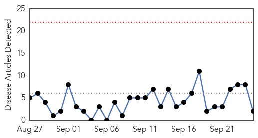
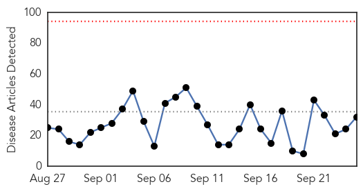
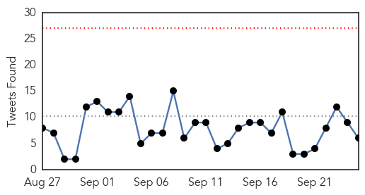
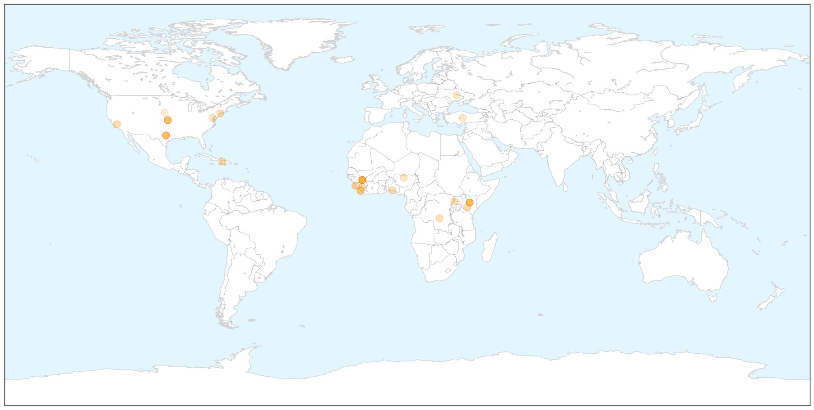
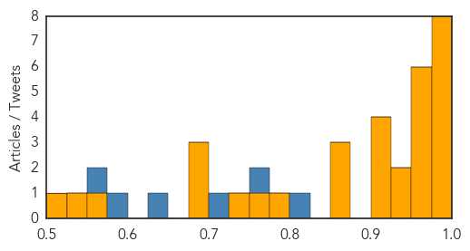

Meningitis
30-Day Web Trend
0 alerts, 0 warnings

30-Day Twitter Trend
0 alerts, 0 warnings

Article Locations

Article Confidences

Top Articles:
Top Tweets:
-
No tweets found for Sep 25, 2015
Ebola
30-Day Web Trend
0 alerts, 0 warnings

30-Day Twitter Trend
0 alerts, 0 warnings

Article Locations

X

Article Confidences
Top Articles:
- 1.000
- World slow to respond to Ebola; Quebec on high alert, says Barrette
- 1.000
- Ebola, Cholera and the Epidemiology of Anti-Blackness – Or, Black Lives Don’t Matter
- 0.996
- New Device Can Detect Ebola Virus More Quickly and More Reliably
- 0.996
- Relief For Airlines Operating West African Route As Ebola Scare Wanes
- 0.994
- Air traveler spreads deadly Ebola to Africa's most populous country -
- 0.993
- Uganda: No Ebola in Hoima, Says Health Ministry
- 0.983
- 16-Year-Old Olivia Hallisey Won the Google Science Fair by Fighting Ebola
- 0.980
- Japan supports IOM’s Ebola prevention activities among migrants entering Guinea - Guinea
- 0.967
- Kenya Airways resumes West Africa flights banned due to Ebola
- 0.964
- Dallas Morning News
- 0.963
- American doctor cured of Ebola continues his work in Liberia
- 0.959
- Kenya Airways resumes West Africa flights banned due to Ebola
- 0.959
- Kenya Airways Resumes West Africa Flights
- 0.953
- American doctor cured of Ebola continues his work in Liberia
- 0.943
- US doctor cured of Ebola continues his work in Liberia
- 0.938
- US Govt. hands over EOC office to Salone « Awoko Newspaper
- 0.918
- Chip-based technology enables reliable direct detection of Ebola virus
- 0.910
- Sustainable Development Goals: Don't leave people’s health missing in action
- 0.909
- Kenya Airways cleared for direct Sierra Leone flights to its network
- 0.900
- Ebola survivors suffer complications
- 0.875
- Ebola Outbreak Appeal
- 0.865
- Behavioral scientist from Richmond talks about her experiences responding to Ebola outbreak in Africa
- 0.859
- The New Emergency Operating Center: A Harbinger of Things to Come?
- 0.790
- A Year After Ebola, Dallas County Judge Clay Jenkins Says North Texas Is 'Battle-Hardened'
- 0.771
- WHO takes Nigeria off global list of polio-endemic countries
- 0.740
- President Obama Awards US Public Health Service the Presidential Unit Citation
- 0.698
- Europe in 2015—health in a diverse and changing region
- 0.685
- WHO takes Nigeria off global list of polio-endemic countries
- 0.679
- Ebola, Now the Caterpillar Challenge
- 0.565
- World Bank Hails Sierra Leone’s Ebola Fight « Awoko Newspaper
- 0.529
- American doctor cured of Ebola continues his work in Liberia
- 0.514
- “Frontline” VR Ebola doc to debut this weekend Realscreen
Top Tweets:
- 0.825
- Ebola mumps and old age inspire doctor's artwork – in pictures - The Guardian http://t.co/aVNqqA0khn ebola EVD
- 0.752
- Ebola Chip Will Help Doctors Contain Future Outbreaks - Gizmodo http://t.co/84W4nlx5M5 ebola EVD
- 0.710
- Relief For Airlines Operating West African Route As Ebola Scare Wanes - AFKInsider http://t.co/h3Y9K8PMBo ebola EVD
- 0.648
- Teen Who Invented $25 Ebola Detection Test Wins Huge Google Prize - Huffington Post http://t.co/XPm7tXJDdA ebola EVD
- 0.594
- GSA: “517 Ebola Vehicles Motorcycles Not Missing” - Liberian Daily Observer http://t.co/SivFWkRybO ebola EVD
- 0.556
- American Doctor Cured of Ebola Continues His Work in Liberia - ABC News http://t.co/q9OfqmyQcM ebola EVD